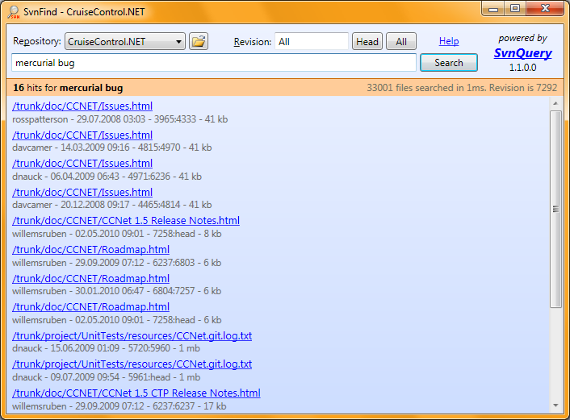

Download a SvnFind with some precreated indices:
Start demo.bat or SvnFind.exe. Use the "Open Folder" button to open an index.

Download a self running demo of SvnWebQuery with an already created index. Visual Studio (2005/2008/2010) must be installed to use the ASP.NET development server.
Start SvnWebQueryDemo.exe to open the web ui for querying the index. Enter your query and press return or the search button.
Some fun queries to play with (if you have downloaded the subversion index):
Now switch to the "All" revisions options. The search will now go through every item in every revision. Repeat the searches from above and notice the differences. Searching for revision messages works best if you select all revisions, because obiviously the head revision has only one message.